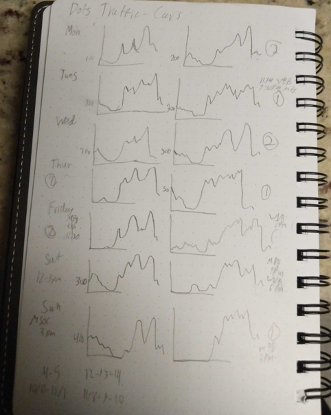

Home
Problem Overview
Approaches
Data Visuals
Findings
In order to better understand the data, we began by looking at the data points over time and location. This required some research and adding geocoordinates for each sensor. We first plotted the data in an area chart over time to create an overview. Then we decided to average traffic volumes by time and sensor to create an averaged overview. In order to get an animated visualization, we used Tableau to express the data in pages(or frames)
Later it became apparent that tweaking was necessary regarding the animation. The thought process was this, looking for large darker circles at 15 minute intervals may intuitively indicate traffic congestion, but the sensors could not reliably account for vehicles until they passed. In fact, a larger darker circle at 15 minute intervals is likely more indicative of a comfortable traffic flow and not traffic congestion.
PLACE HOLDER
